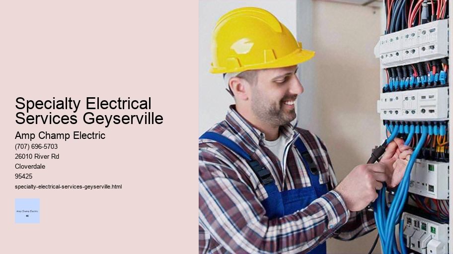

News
Electrical Installation Healdsburg
Electrical Installation Healdsburg
Electrical Installation Santa Rosa
Electrical Installation Cloverdale
Electrical Installation Geyserville
Electrical Installation Windsor
Maintenance and Repair Services Healdsburg
Maintenance and Repair Services Healdsburg
Maintenance and Repair Services Santa Rosa
Maintenance and Repair Services Cloverdale
Maintenance and Repair Services Geyserville
Maintenance and Repair Services Windsor
Electrical Safety Inspections Healdsburg
Electrical Safety Inspections Healdsburg
Electrical Safety Inspections Santa Rosa
Electrical Safety Inspections Cloverdale
Electrical Safety Inspections Geyserville
Electrical Safety Inspections Windsor
Energy Efficiency Upgrades Healdsburg
Energy Efficiency Upgrades Healdsburg
Energy Efficiency Upgrades Santa Rosa
Energy Efficiency Upgrades Cloverdale
Energy Efficiency Upgrades Geyserville
Energy Efficiency Upgrades Windsor
Specialty Electrical Services Healdsburg
Specialty Electrical Services Healdsburg
Specialty Electrical Services Santa Rosa
Specialty Electrical Services Cloverdale
Specialty Electrical Services Geyserville
Specialty Electrical Services Windsor
About Us
Contact Us

Specialty Electrical Services Geyserville
Electrical Maintenance
Specialty Electrical Services: Navigating the Currents of Expertise
In an age where technology governs our lives and homes are increasingly becoming smart, the need for specialized electrical services is more pronounced than ever.
Electric Vehicle Charging Station Installation
Gone are the days when electricians were only called upon to replace a blown fuse or fix a flickering light. Today, they are required to navigate through a complex web of electrical systems that power everything from high-end audiovisual equipment to energy-efficient lighting solutions. Specialty electrical services have thus become an essential aspect of modern living.
So what exactly falls under the umbrella of specialty electrical services? It's a term that encompasses a wide range of skills and expertise in areas such as custom lighting design, home automation, renewable energy installations like solar panels, backup generator systems, and even electric vehicle charging stations. Each of these areas requires not just proficiency in basic wiring but also an understanding of sophisticated technologies and systems integration.
Custom Lighting Design
Creating ambiance and functionality through lighting is both an art and science. A specialist in this field must be able to assess space for its use, décor, occupants' needs, and natural light availability. They then devise a plan that includes the types of fixtures to be used, their placement, controls for dimming or color-changing abilities. Craftsmanship is key here; after all, lighting has the power to transform spaces from mundane to magnificent.
Home Automation
Another area where specialty electrical services shine is home automation. Smart homes are no longer futuristic concepts; they're today's reality. From remotely controlling HVAC systems to having your blinds drawn with voice commands or scheduling your security system – all these require intricate knowledge about different protocols such as Zigbee or Z-Wave and how they integrate with various smart devices around your house.
Renewable Energy Installations
As environmental concerns take center stage globally, renewable energy solutions like solar panels have seen increased adoption by households looking to reduce their carbon footprint while saving on utility bills. Specialty electricians trained in this sector not only install these units but also ensure they're optimized for maximum efficiency.
Backup Generators
Unpredictable weather patterns have made power outages more common than one would wish. This has pushed many towards installing backup generators as fail-safes against disruptions caused by blackouts. Installing these involves not just setting up the unit but also integrating it safely into the existing electrical system—a task suited for those with specific training in such setups.
Electric Vehicle Charging Stations
The surge in electric vehicle (EV) ownership has created demand for home EV charging stations—an entirely new domain within electrical services requiring knowledge about load management and compliance with automotive standards.
Choosing Specialty Electrical Services
When it comes time to hire someone for these specialized tasks—it's important that you look beyond mere qualifications on paper. The right professional should not only possess certifications but also exhibit up-to-date knowledge about advancements in their field along with hands-on experience.
Safety Concerns
Given that electricity can be hazardous when mishandled—reputable service providers prioritize safety above all else during installations or repairs ensuring adherence to strict codes and regulations set forth by governing bodies like NEC (National Electrical Code).
Conclusion
Specialty electrical services represent a niche yet increasingly vital segment within the broader field of electrical work—one that embraces complexity while delivering tailored solutions designed around individual needs and technological advancements. As we continue moving forward into an electrified future rich with innovation at every corner—from LED art installations illuminating cityscapes to green roofs powered by sunshine—the role played by expert electricians specializing in bespoke projects will undoubtedly become more pertinent than ever before.
Title: The Backbone of Modern Communication: Data Cabling and Network Wiring
In the fast-paced world of technology, where data transfer has become as essential as electricity to the functioning of our daily lives, the unsung heroes that make it all possible are often overlooked.
Specialty Electrical Services Geyserville - Electrical Safety Standards
AFCI Breakers
Uninterruptible Power Supply (UPS) Systems
Electric Vehicle Charging Station Installation
Knob and Tube Wiring Replacement
Electrical Relays
These heroes are not made of flesh and bone but copper and fiber-optic glass; they are the intricate systems of data cabling and network wiring that form the backbone of modern communication.
To appreciate the significance of data cabling and network wiring, one must first understand what these terms encompass. Simply put, data cabling is the process of connecting various devices within a network using cables like twisted pair, coaxial or fiber optic cables for transmitting information. Network wiring refers more broadly to this same concept but can also include other elements such as patch panels, routers, switches, and other hardware that manage connections between different parts of a network.
The importance of proper data cabling cannot be understated in an era where businesses rely heavily on robust IT infrastructures to conduct operations. High-speed internet access is no longer a luxury; it's a necessity for everything from streaming video conferences to managing databases hosted in cloud services. Without well-designed and properly installed network wiring, companies could face significant operational disruptions due to latency issues or downtime.
Data cabling starts with planning – selecting the right type of cable for the job based on bandwidth requirements and environmental conditions. Twisted pair cables (such as Cat5e or Cat6) are commonly used for Ethernet networks because they provide good speed at low cost. Fiber optic cables offer higher speeds over longer distances with less signal loss than their metallic counterparts, making them ideal for connecting buildings or even cities.
Installation requires meticulous attention to detail – running cables through walls, ceilings and floors; terminating them at jacks or patch panels; testing connections for performance benchmarks. Skilled technicians ensure that every inch of cable is carefully laid out to minimize interference from electromagnetic sources such as fluorescent lights or machinery which can degrade signal quality.
One critical aspect often overlooked until problems arise is cable management. Neatly organized cables not only look professional but also simplify maintenance tasks like troubleshooting connectivity issues or upgrading system components later on down the line. Cable ties, labels, conduits and raceways help maintain order among potentially hundreds (or thousands) of individual wires.
Beyond installation comes maintenance – ensuring that your wired infrastructure remains reliable over time involves regular testing and updating outdated components before they fail catastrophically during peak business hours. Proactive measures save money in long-term repairs while preserving efficient workflow unaffected by preventable technical glitches.
Network security also plays an integral role when discussing networking infrastructure since improperly secured wiring closets could expose sensitive information to unauthorized individuals who may attempt physical breaches into systems rather than hacking in digitally through firewalls designed specifically against cyber threats.
In conclusion, although it might not carry the glamour associated with cutting-edge software applications or flashy user interfaces seen by end-users every day - data cabling & network wiring remain fundamental aspects underpinning today’s digital landscape. Companies depend on high-quality installations carried out by experienced professionals who understand intricacies involved in creating networks capable standing test time amidst ever-growing demands placed upon them by users expecting seamless connectivity around clock without second thought given towards complex web hidden behind wall socket into which they plug their devices seeking instant gratification offered up modern age convenience courtesy quiet yet omnipresent force known simply as "the network."
electrical-installation-healdsburg.html
electrical-installation-santa-rosa.html
electrical-installation-cloverdale.html
electrical-installation-geyserville.html
electrical-installation-windsor.html
maintenance-and-repair-services-healdsburg.html
maintenance-and-repair-services-santa-rosa.html
maintenance-and-repair-services-cloverdale.html
maintenance-and-repair-services-geyserville.html
maintenance-and-repair-services-windsor.html
electrical-safety-inspections-healdsburg.html
electrical-safety-inspections-santa-rosa.html
electrical-safety-inspections-cloverdale.html
electrical-safety-inspections-geyserville.html
electrical-safety-inspections-windsor.html
energy-efficiency-upgrades-healdsburg.html
energy-efficiency-upgrades-santa-rosa.html
energy-efficiency-upgrades-cloverdale.html
energy-efficiency-upgrades-geyserville.html
energy-efficiency-upgrades-windsor.html
specialty-electrical-services-healdsburg.html
specialty-electrical-services-santa-rosa.html
specialty-electrical-services-cloverdale.html
specialty-electrical-services-geyserville.html
specialty-electrical-services-windsor.html
privacy-policy.html
sitemap.html
sitemap.xml
about-us.html
feed.xml
Home theater audiovideo installations
Home Theater Audio-Video Installations: Crafting Cinematic Experiences at Home
The very notion of home theater audio-video installations conjures up images of immersive cinematic environments, plush seating, and the exhilarating sensation of being in the center of the action—all from the comfort of one's own living room. This essay delves into the intricacies of creating a personal entertainment haven that not only rivals but potentially surpasses the experience offered by commercial cinemas.
**The Genesis of Home Theaters**
In an era where technology is advancing rapidly, it has become feasible for movie enthusiasts to recreate a high-quality cinema experience at home. A well-designed home theater system offers convenience, privacy, and control over viewing conditions—luxuries often absent in public theaters. Whether it’s to enjoy films, binge-watch series or play video games, a dedicated audio-video setup enhances every aspect of media consumption.
Low Voltage Systems
**Audio: The Heartbeat of Immersion**
Sound quality is paramount in any home theater system. It breathes life into visuals and weaves an emotional tapestry that complements on-screen narratives. Contemporary audio solutions range from simple soundbars to intricate surround sound systems like 5.1 or 7.1 channels which feature multiple speakers placed strategically around viewers for multidirectional audio effects.
The most advanced setups might include technologies such as Dolby Atmos or DTS:X which create a three-dimensional soundscape by adding height channels allowing sound to move freely around and above the audience, truly enveloping them in a cocoon of acoustics. Investing time in understanding room acoustics can also greatly enhance audio performance; materials used within the space can either absorb or reflect sound waves thus affecting clarity and resonance.
**Visuals: Painting with Pixels**
While stellar sound lays down an emotive foundation, it is ultimately the visual component that captivates our gaze. Selecting the right display—whether it be a large LED TV or a projector-and-screen combination—is crucial for achieving sharp imagery and vibrant colors that faithfully represent directorial vision.
Projectors have traditionally been favored for authentic theater-like ambiance given their ability to produce larger images more akin to what you'd find in a cinema hall. However, advancements in television technology with Ultra HD 4K resolution are closing this experiential gap while offering brighter displays usable even in well-lit rooms—a feat projectors typically struggle with.
When installing visual components, attention must also be paid to factors like screen size relative to viewing distance, screen gain if using projectors (the amount of light reflected back at viewers), and ensuring minimal ambient light interference for optimal contrast levels.
**Connectivity & Control Systems**
A modern home theater isn't just about picture and sound; it thrives on connectivity too. Seamless integration between various devices—Blu-ray players, streaming devices, gaming consoles—is facilitated through smart receivers serving as hubs for all your AV equipment.
Sophisticated control systems simplify user interaction by consolidating remotes into singular interfaces accessible via smartphones or tablets through apps designed specifically for this purpose.
Specialty Electrical Services Geyserville - Knob and Tube Wiring Replacement
Electrical Relays
Electrical Permit Assistance
Wire and Cable Management
Smoke Detector Installation
Electrical Supply Stores
Some even incorporate voice control or AI elements making operations almost magically intuitive.
**Personalization & Comfort**
Beyond technical specifications lies another crucial aspect—theater design itself which should embody personal taste while remaining functional. Seating arrangements must cater not just aesthetically but ergonomically too; providing support during those extended marathons sessions requires high-quality recliners with ample cushioning.
Acoustic panels can double up as art pieces adding character while helping manage echo within space whereas dimmable lighting sets mood appropriate for every genre—from bright comedies to dark thrillers—and everything else between!
Finally yet importantly there's accessorizing process whereby one adds finishing touches such popcorn machines collectibles relevant paraphernalia turning these spaces into thematic retreats reflecting owners' passions interests whether they are sci-fi aficionados sports fanatics anything else under sun!
In conclusion assembling harmonious blend top-tier AV components thoughtful interior design creates holistic haven transcendent beyond mere watching listening becomes full-bodied sensorial journey unique each individual who partakes adventure transforming everyday viewing experiences something truly extraordinary!
Security systems alarms and camera installation
Security Systems, Alarms, and Camera Installation: Ensuring Safety in the Modern Age
In an age where safety and security are paramount concerns for homeowners and businesses alike, the importance of robust security systems cannot be overstated. Advances in technology have given rise to a plethora of options that promise peace of mind through alarms and camera installations. These systems serve as both deterrents to potential intruders and invaluable tools for monitoring and responding to security breaches.
To begin with, modern security alarms are sophisticated devices capable of detecting unauthorized entry through various sensors such as door contacts, window sensors, motion detectors, glass break detectors, and even vibration sensors. The moment these sensors are triggered by unusual activity, they send signals to a control panel which then initiates an appropriate response – this could involve sounding a loud siren to alert occupants and scare off intruders or sending an automated notification to the homeowner's mobile device or a central monitoring service.
Central monitoring services are particularly critical for when property owners are away from their premises. Upon receiving an alarm signal, trained professionals can assess the situation quickly and contact local law enforcement if necessary. This rapid response can be the difference between thwarting a crime in its tracks or arriving too late after valuables have been taken or damage has been done.
Camera installation complements alarm systems by providing visual surveillance capabilities around the clock. Cameras act as both preventative measures - since their mere presence can deter criminal activities - and crucial evidence collecting tools should an incident occur. They come in various forms including indoor cameras for sensitive areas within buildings; outdoor cameras that withstand weather elements; pan-tilt-zoom (PTZ) cameras which offer greater coverage; infrared/night vision cameras for low-light conditions; and networked IP cameras that stream footage over the internet for remote viewing.
AFCI Breakers
Smart integration has elevated camera functionality further. Today's smart cameras can distinguish between routine movements like pets wandering around versus human intruders attempting break-ins. They can also integrate with mobile applications allowing homeowners to view live feeds from anywhere at any time — ensuring constant vigilance over one's property.
Installation of these systems is a task best left to professionals who understand not only how to physically mount devices but also how best to configure them according to specific needs while adhering to legal guidelines regarding privacy issues. Proper placement is key: alarms must be out of easy reach so they cannot be disabled by intruders, yet accessible enough for residents or employees to use without hindrance; cameras need clear lines of sight free from obstructions while avoiding angles that may infringe on neighbors' privacy.
Moreover, maintenance plays a crucial role in ensuring these systems remain operational over time. Regular checks on battery life for wireless components, software updates for digital interfaces, cleaning lenses on cameras – all contribute towards maintaining optimal performance levels.
Lastly, it’s worth acknowledging that security systems go beyond just protecting physical assets; they also provide psychological comfort knowing one is taking proactive steps towards safeguarding what matters most whether it’s family members at home or employees at workspaces.
In conclusion, investing in quality security system alarms and camera installations represents not merely an expense but rather an investment into one’s peace of mind—an essential component in today’s world fraught with uncertainties. By staying informed about advancements in technology and working closely with reputable service providers who prioritize integrity alongside efficiency during installation processes—individuals can effectively fortify their environments against unwanted threats whilst navigating our ever-evolving landscape with confidence.
Landscape lighting design and installation
Landscape lighting design and installation is an artful endeavor that combines aesthetic sensibility with technical expertise, enhancing the beauty and functionality of outdoor spaces when the sun dips below the horizon. This essay will delve into the intricacies of landscape lighting, exploring the considerations involved in designing a system and the steps required for its installation.
Firstly, landscape lighting serves multiple purposes: it accentuates architectural features, highlights landscaping elements, provides safety by illuminating walkways and steps, and creates a warm ambiance for outdoor living areas. A well-executed lighting plan takes all these functions into account to create an inviting and secure environment.
The design process begins with evaluating the space. Designers must consider factors such as existing natural light sources, the interplay of shadows and silhouettes, focal points worth highlighting, as well as practical aspects like pathways or entrances requiring illumination for safe navigation. They also take into account homeowner preferences regarding style—be it subtle and subdued or bold and dramatic.
A key aspect of landscape lighting design is layering. Just like in interior spaces, outdoor lighting benefits from layers that serve different purposes: ambient light for overall illumination; task lighting for specific activities such as grilling or reading; accent lighting to showcase plants or architectural details; and decorative lights that add character or whimsy.
Another crucial consideration is choosing appropriate fixtures. These should be durable enough to withstand weather conditions while complementing the style of the property. From spotlights to path lights, floodlights to underwater luminaires for water features—each has its role in a comprehensive design.
LED technology has revolutionized landscape lighting by offering energy-efficient solutions with long life spans. LEDs come in various color temperatures allowing designers to tailor their choices from cool whites that mimic moonlight to warm whites that resemble candlelight.
Uninterruptible Power Supply (UPS) Systems
Once a plan is finalized, installation can commence. This phase requires both electrical know-how and landscaping skills because it involves not only wiring but also integrating fixtures seamlessly into garden beds, trees, hardscapes, etc., without disturbing the existing flora too much.
Installation often starts with laying out all components on site according to the design map. It's essential at this stage to double-check fixture locations against plans before any digging occurs. Trenches are then carefully excavated for laying electrical cables—these should be buried deep enough to protect them from damage but within reach per local regulations (usually around 6 inches deep).
All wiring must comply with National Electrical Code standards ensuring safety measures are met including proper grounding techniques which help prevent potential shock hazards due mainly moisture prevalent outdoors environments where these systems operate continuously throughout various weather conditions.
Connections between wires need waterproof connectors designed specifically use outside ensure longevity system avoid short circuits could lead malfunction even fire hazard if not done correctly utmost importance here hire professionals experienced field carry out these tasks safely efficiently especially dealing electrical components close proximity water sources like fountains ponds etcetera
Finally once everything connected tested thoroughly make sure all lights functioning intended adjustments made beam angles intensity levels achieve desired effect area illuminated perfectly without being overly bright causing glare issues neighbors passersby alike
In conclusion Landscape Lighting Design Installation beautiful blend form function transformative impact properties nightfall Whether looking increase curb appeal enhance security simply enjoy backyard after dark thoughtful approach both designing installing ensure results breathtaking every time
Generator installation and maintenance
Generator Installation and Maintenance: Ensuring Uninterrupted Power Supply
The modern world thrives on the uninterrupted supply of electricity. It powers homes, fuels businesses, and drives industries. However, this reliance on electrical power also makes us vulnerable to outages caused by natural disasters, system failures, or routine maintenance activities. This is where generators come into play - as stalwart backups that ensure continuity when primary power sources fail. The installation and maintenance of these generators are critical tasks that demand careful planning, technical expertise, and regular attention.
Installation: Laying the Foundation for Reliability
The process of generator installation begins with selecting an appropriate unit based on the needs of a home or business. Size matters; too small a generator will be ineffective during a power outage, while one that's too large can be unnecessarily expensive to purchase and operate. Professionals often conduct a load analysis to determine the right specifications – considering factors such as peak load requirements and essential circuits.
Once the suitable generator is chosen, its placement becomes the next focus. Local codes and regulations must be observed; typically generators should be located in well-ventilated areas away from windows or air intakes to prevent exhaust fumes from entering living spaces or work environments. Sound ordinances may also influence placement since generators can be noisy when operating.
Installing a generator involves intricate electrical work which should only be done by licensed electricians experienced in generator systems. They will install transfer switches that allow safe transitions between utility power and generator power without risking back-feed into the grid – which can endanger utility workers repairing lines during an outage.
After physical placement and wiring are complete, fuel connections need addressing if using diesel or natural gas-powered units. Consistent fuel supply is crucial for reliable operation during extended outages; hence storage solutions may also need consideration.
Maintenance: Key to Longevity and Performance
A well-installed generator provides peace of mind but maintaining that sense of security requires regular maintenance. Just like any other engine-powered machine, generators have moving parts subject to wear-and-tear alongside components that degrade over time.
Routine maintenance typically includes checking oil levels, replacing filters (oil, air, fuel), inspecting belts and hoses for signs of wear or cracks, testing battery function and charger output along with verifying control panel readings against actual outputs for discrepancies.
Beyond these checks are more specialized procedures such as load bank testing where the generator is run under full load conditions to identify potential operational issues not apparent at no-load or light-load running conditions.
Equally important is ensuring adequate supplies of consumables like lubricants are on hand along with spare parts for quick replacement in case something fails unexpectedly during an emergency use scenario.
Most manufacturers provide recommended service intervals; however environmental factors like extreme temperatures or dusty locations might necessitate shorter intervals between services.
Contracting with professionals skilled in servicing your specific make/model ensures adherence to best practices keeping warranties valid while extending lifespan through expert care attention.
In summary:
Specialty Electrical Services Geyserville - Electrical Maintenance
Low Voltage Systems
Electrical Safety Standards
AFCI Breakers
Uninterruptible Power Supply (UPS) Systems
Electric Vehicle Charging Station Installation
Knob and Tube Wiring Replacement
Electrical Relays
Generators stand guard ready to fill in when our primary sources falter providing invaluable service across residential commercial industrial applications alike – their proper installation meticulous maintenance form bedrock upon which reliability rests within this dynamic partnership lies key unbroken productivity comfort safety regardless what surprises nature man throws our way ensuring truly uninterrupted power supply doesn't just happen it’s carefully engineered nurtured every step way from choice unit final flip switch welcoming back mainline electricity after successful bridge-over courtesy silent sentinel patiently waiting call action once again proving worth weight gold.
Specialty Electrical Services Windsor
About
About Geyserville
Check our other pages :
Maintenance and Repair Services Santa Rosa
Electrical Installation Healdsburg
Energy Efficiency Upgrades Windsor
Frequently Asked Questions
What types of specialty electrical services are available in Geyserville?
In Geyserville, electricians offer a variety of specialty electrical services, which may include custom lighting design and installation, solar panel system installations, energy efficiency audits and upgrades, backup generator installation and maintenance, as well as specialized support for vineyards or agricultural operations that require unique electrical solutions.
Are the electricians providing specialty electrical services in Geyserville licensed and insured?
Yes, reputable electricians providing specialty electrical services in Geyserville should be fully licensed to work in the state of California. They should also carry liability insurance and workers compensation insurance to protect homeowners from any potential damages or injuries that could occur during the provision of their services.
How do I schedule an appointment with a specialty electrician in Geyserville, and what information will I need to provide?
To schedule an appointment with a specialty electrician in Geyserville, you can contact local electrical service providers directly via phone or email. When requesting service, be prepared to provide details about your project such as the scope of work needed, your preferred timeline for completion, any specific requirements related to your property or installation (like solar panels or custom lighting), and your contact information. Some providers may also offer online booking options through their websites.
Specialty Electrical Services Geyserville